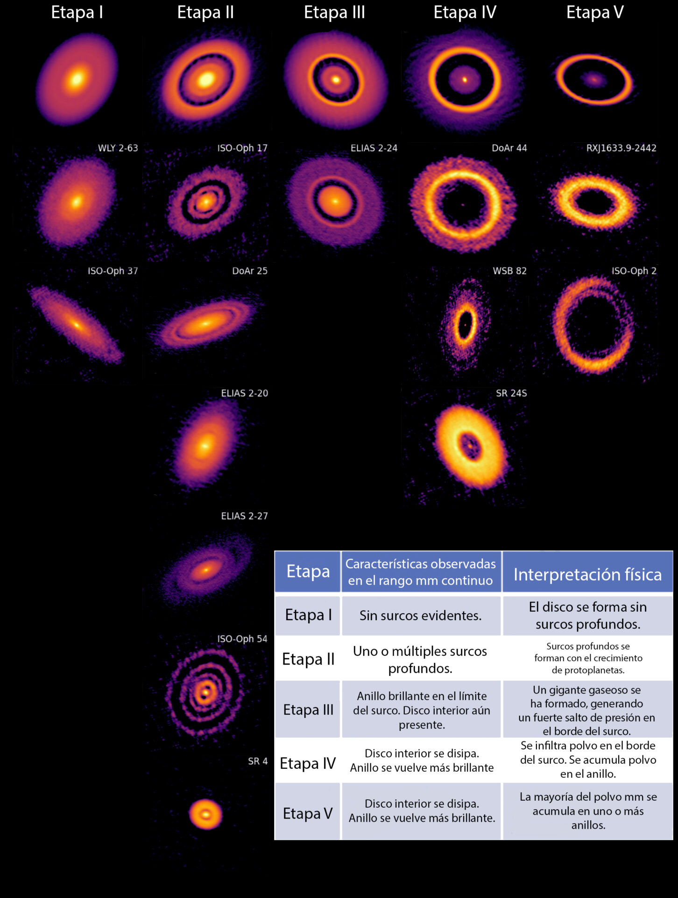

By combining ALMA observations and numerical simulations, the ODISEA project team led by Dr Lucas Cieza, principal investigator of Millennium Nucleus YEMS, inferred how planets would have formed and influenced the discs that gave rise to them, proposing and validating a five-stage evolutionary sequence.
Since ALMA captured its stunning 2014 image of HL Tau — with rings and gaps in the disc of a newly born star — the astronomical community has sought to explain how such complex structures could appear at such early stages. The surprise grew in 2018, when the DSHARP survey revealed that these patterns were common in the majority of protoplanetary discs, sparking a debate about whether they were really caused by planets in formation.
Now, using ALMA data and advanced simulations, a team led by Santiago Orcajo (Instituto de Astrofísica de La Plata; CONICET and Universidad Nacional de La Plata, Argentina) presented a new model tracing the evolution of these discs through five stages. The results strongly supported a planetary origin for the substructures and offered new clues about how planets interact with the discs that formed them.
The 15 brightest protoplanetary discs in Ophiuchus (observed by ODISEA and DSHARP), showing rings and gaps of different sizes indicating the presence of forming bodies. Credit: Orcajo, S. et al. (2025).
In 2021, the ODISEA project proposed a five-stage sequence to explain the diversity of observed morphologies. Although initially a conceptual idea, the new work, supported by ALMA data and simulations with the PlanetaLP and RADMC-3D codes, reproduced each of the stages, providing solid numerical support for the hypothesis.
"In science we look for patterns and similarities and try to find the simplest explanation that accounts for many observations. We saw that discs could be grouped with distinct properties, perhaps stages of the same underlying process: planet formation," commented Lucas Cieza, ODISEA leader and professor at the Instituto de Estudios Astrofísicos at UDP.
The five-stage sequence
ODISEA classified protoplanetary discs into five evolutionary stages, each associated with signatures of planet-disc interaction:
- Stage I: Very young discs with superficial or non-existent substructures; protoplanets have not yet opened perceptible gaps.
- Stage II: Appearance of relatively narrow gaps and rings, signalling the growth of protoplanets.
- Stage III: Rapid widening of gaps due to a sudden mass increase as gas envelopes are acquired; dust accumulates at outer edges due to "pressure bumps".
- Stage IV: Leakage of dust at cavity edges and dust-depleted inner discs; millimetre-sized dust migrates and accumulates efficiently.
- Stage V: Complete drainage of inner dust towards the star; the outer discs become one or several narrow rings.

Illustrative figure of the evolutionary sequence proposed by ODISEA.
The simulations showed that giant planets create gaps and pressure barriers that redistribute gas and dust, accumulating millimetre-sized material at gap edges and forming rings observable with ALMA. Using PlanetaLP, the team explored mass and orbital configurations that, after thousands of years of evolution, produced discs with rings and gaps comparable to those observed. In several trials, the presence of planets prolonged the life of the inner disc, and the model was able to recreate the full evolutionary sequence.
"We saw that PlanetaLP allows us to find planetary configurations that, as they evolve, generate rings and gaps like those we see with ALMA. Initially we wanted to reproduce Elias 2-24, but then we found that the code could recreate the entire sequence," concluded Santiago Orcajo, lead author.
The study also reinforced the interpretation of the iconic HL Tau image: the observed substructures are largely signatures of planets in formation. "This type of study is very important for ALMA, because it supports one of its most emblematic discoveries," highlighted Antonio Hales (ALMA astronomer and co-author). "We are not just observing discs; we are witnessing planetary formation in real time. ALMA is establishing itself as a powerful tool for detecting planets."
Additional information
The results were published in The Astrophysical Journal Letters in the article by Orcajo et al.: "The Ophiuchus DIsk Survey Employing ALMA (ODISEA): A Unified Evolutionary Sequence of Planet-Driven Substructures Explaining the Diversity of Disk Morphologies".
Source: ALMA press release.